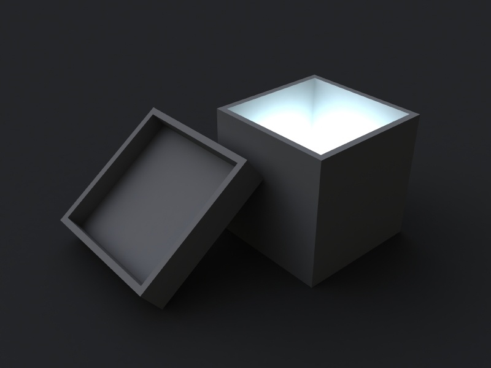
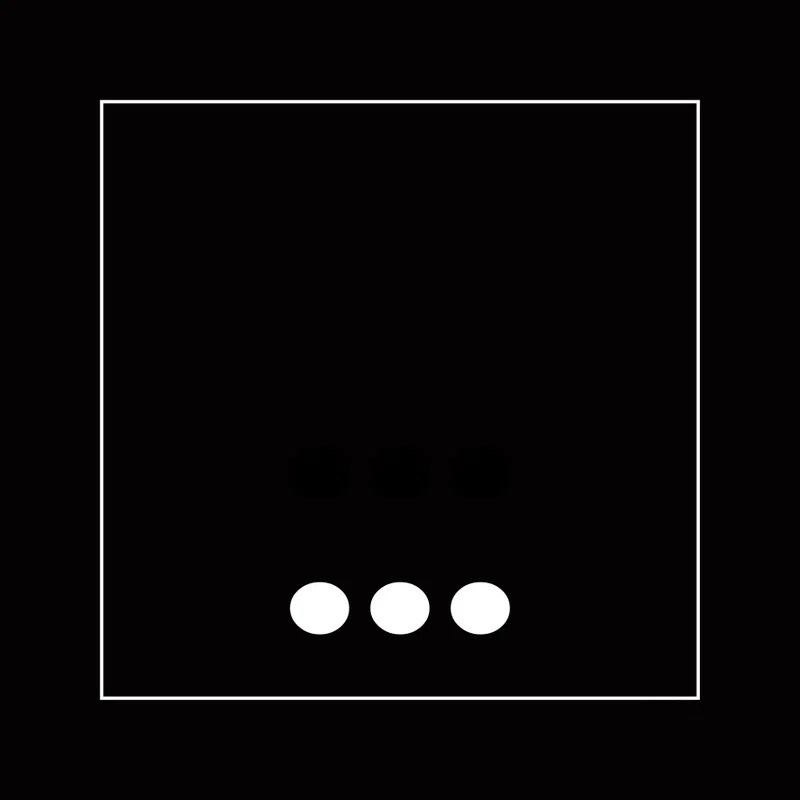

Processo de inspiração

Pense fora da caixa
Mantenha sua mente sempre aberta. A inspiração pode vir de onde você menos espera, dê asas à sua imaginação.

Tenha referências
Amplie seu leque de conhecimentos, quanto mais referências, mais pontos de vista. Quanto maior seu campo de visão, mais informação abrangente, mais fácil encontrar novas referências.

Crie sua criatividade
Com a mente aberta e sabendo onde buscar referências. Crie (ou "copie" de forma criativa). Deixe sua criatividade fluir, algo aparentemente sem relevância pode acabar sendo transformado!